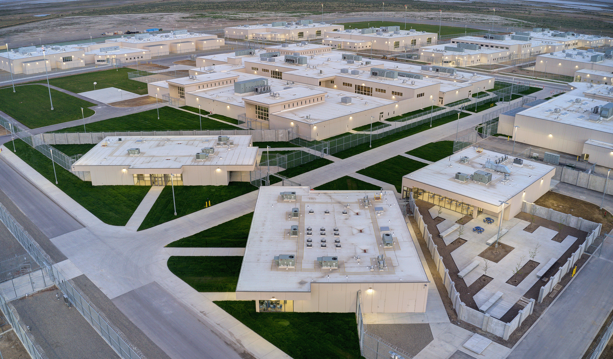
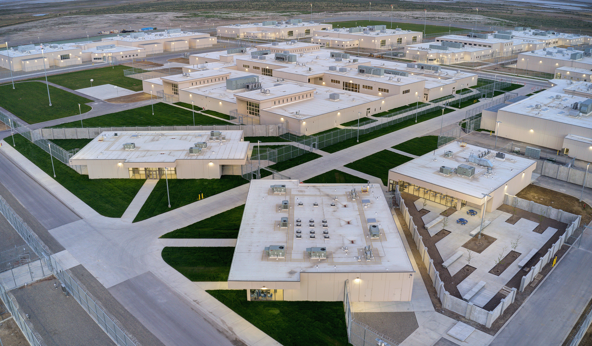

Utah — AQSHning g‘arbiy qismida joylashgan tog‘li shtat bo‘lib, tabiiy
go‘zalligi, milliy bog‘lari va diniy merosi bilan mashhur. U 1896-yil
4-yanvarda AQSHga 45-shtat sifatida qo‘shilgan.
🌍 Geografik joylashuvi: G‘arbda: Nevada
Sharqda: Colorado
Shimolda: Idaho va Wyoming
Janubda: Arizona
Hududi tog‘li va cho‘l landshaftlari bilan ajralib turadi. Shtatning katta
qismi Colorado platosida, markaziy va shimoliy qismlari esa Wasatch tog‘
tizmasi bilan qoplangan.
💼 Iqtisodiyoti: Utah iqtisodiyoti turli sohalardan iborat:
Texnologiyalar va IT sohasi (ayniqsa Salt Lake City atrofida) Turizm va
milliy bog‘lar Konchilik (mis, molibden, oltin va boshqa minerallar)
Qishloq xo‘jaligi (chorvachilik, sut mahsulotlari) Qurilish va ishlab
chiqarish
Utah "Silicon Slopes" nomi bilan ham tanilgan — bu hududda bir nechta
yirik texnologik kompaniyalar joylashgan.
🏞️ Diqqatga sazovor joylari:
Zion National Park — ajoyib qoyali kanyonlar Bryce Canyon — noyob tosh
ustunlar (hoodoos) Arches National Park — tosh kamonlar va g‘aroyib
shakllar Monument Valley — ko‘plab filmlarda fon bo‘lib xizmat qilgan
landshaft Salt Lake City — shtat poytaxti, Mormon cherkovi markazi
🕌 Madaniyat: Utah shtati The Church of Jesus Christ of Latter-day Saints
(Mormonlar) bilan juda chambarchas bog‘liq. Bu shtatda diniy e’tiqod
jamiyat hayotiga katta ta’sir ko‘rsatadi. Shtat turli festivallar, musiqa
va sport tadbirlari bilan boy.
 
